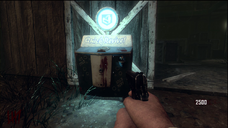
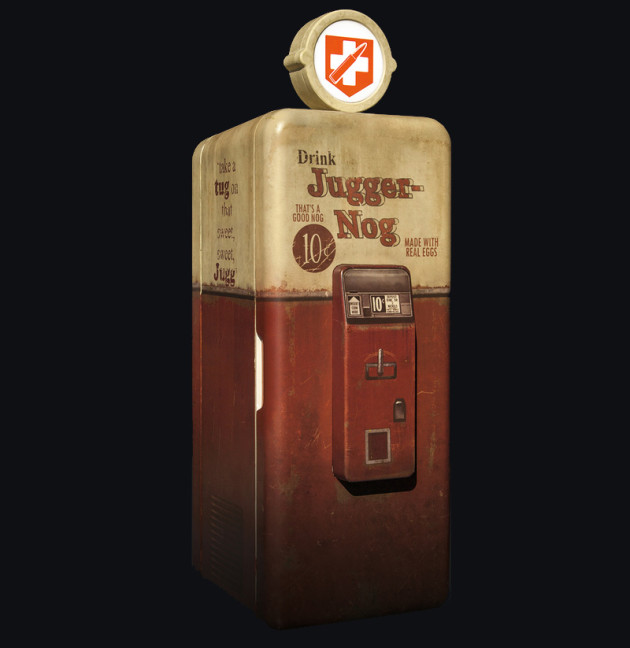
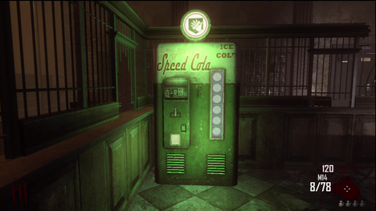
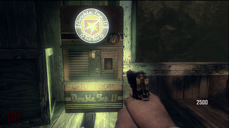

Perks
Quick Revive
Quick Revive is a Perk-A-Cola in Zombies. Each use costs 500 Points when playing solo, or 1500 Points when playing with at least one other player. This Perk has two separate uses, depending on the amount of players in the game.
On solo, Quick Revive is used to revive yourself once downed. While being revived, you will be given the upgraded M1911s (Mustang and Sally). Quick Revive can only be used three times when alone.
Jugger-Nog
Jugger-Nog is a Perk-A-Cola in Zombies. Each use costs 2500 Points. This Perk multiplies a player's health by three, allowing players to go down after six hits instead of two.
Speed Cola
"Speed Cola is a Perk-A-Cola in Zombies. Each use costs 3000 Points. This Perk allows you to reload weapons in half the usual time.
Double Tap Root Beer
Double Tap II Root Beer is a Perk-A-Cola in Zombies. Each use costs 2000 Points. This Perk increases the rate of fire of your weapon and doubles the bullets fired in an interesting way.
In regards to the double ammo: The overall ammo is not doubled, and two bullets aren't visually being fired (with sniper rifles as an exception), but two bullets will hit zombies in the area, and double the points will be given. This works on all weapons, excluding the RPG, Ballistic Knives, War Machine, and Ray Gun. Also note that this perk does not consume twice as much ammunition per shot. In regards to the increased fire rate: If it's an automatic weapon, the bullets will fire faster. If it's a bolt action or pump action weapon, you will do the action quicker in between shots. If it's semi automatic, there will be no effect.